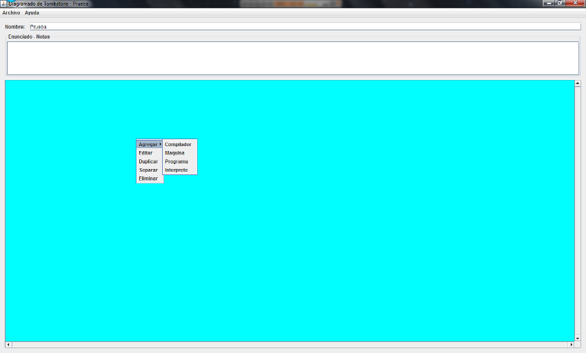

En esta pantalla puedes realizar las siguientes opciones prosionando las botones disponibles:
Aceptar: abre una nueva area de trabajo, lista para empezar a trabajar.
Abrir: utiliza esta opción si deseas recuperar un trabajo anterior o realizar algunos de los ejercicios que se encuentran disponibles.
Cancelar: finalizar la ejecucion de la aplicación.
Aquí disponenos de dos opciones ubicadas en la barra de menu superior:
Archivo: contamos con las siguientes opciones:
1. Nuevo: permite crear una nueva area de trabajo
2. Abrir: utiliza esta opción si deseas recuperar un trabajo anterior o realizar algunos de los ejercicios que se encuentran disponibles.
3. Guardar: te permite guardar el area de trabajo actual.
4. Exportar: sirve para exportar el area de trabajo actual a una imagen.
Ayuda: contamos con las siguientes opciones:
1. Contenido: permite ver este manual.
2. Acerda de: muestra la informacion de los desarrolladores de la aplicacion.
Pulsando boton derecho sobre el area de trabajo dispones de un menu con nuevas opciones tales como:
1. Editar: permite modificar las caracteristicas del elemento seleccionado.
2. Separar: sirve para separar dos elementos que se encuentran juntos.
3. Eliminar: elimina el elemento seleccionado.
4.Agregar:despliega un submenu que permite agregar elementos tales como: compiladores, maquinas, interprestes y programas, al area de trabajo actual.
Detalle del submenu Agregar:
1. Compilador: agregar un compilador al area de trabajo actual.
2. Maquina: agregar una maquina al area de trabajo actual.
3. Programa: agregar un programa al area de trabajo actual.
4. Interprete:agregar un interprete al area de trabajo actual.
1. El programa une los componentes acercardolos unos a los otros, solo se uniran si la seleccio que se esta haciendo es la adecuada.
 Informacion Básica
Informacion Básica Manual de uso
Manual de uso